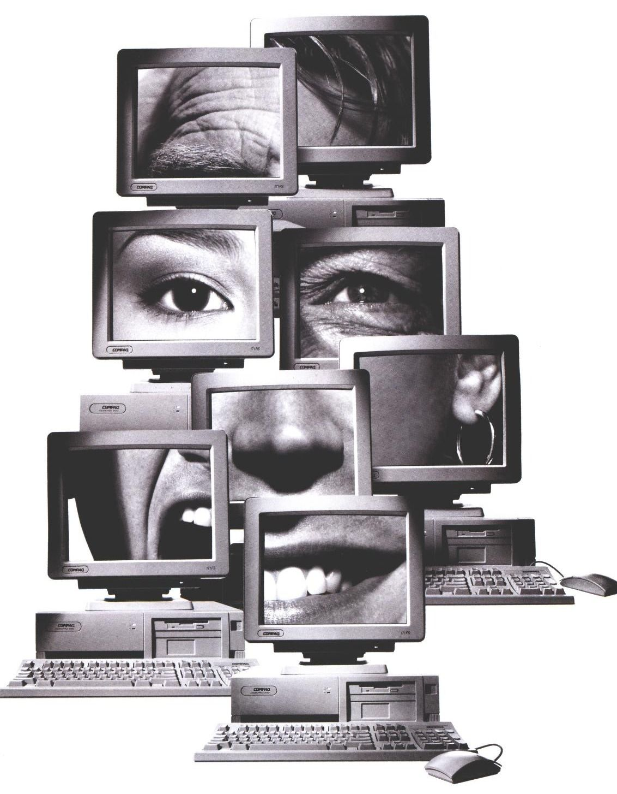
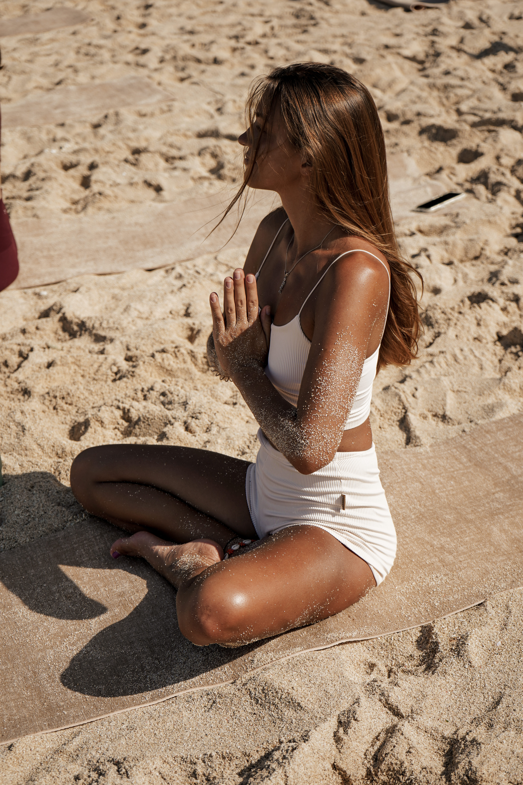

Медийность создаёт доверие ещё до знакомства. Люди склонны выбирать тех, кого уже знают.

Экспертность без присутствия в информационном поле остаётся незаметной.
Сильным специалистам нужна сильная репутация.
Медийность сокращает дистанцию между вами и аудиторией.
Публикации, комментарии и медиаформируют долгосрочное восприятие специалиста.
Работаю с экспертами, wellness-проектами, врачами, брендами и специалистами, которым важно не просто присутствовать в интернете, а формировать устойчивый профессиональный образ.
Долгосрочная работа с медиа, публичным образом и репутацией специалиста. Стратегия присутствия, инфоповоды, публикации, комментарии, коллаборации и развитие экспертного позиционирования.
Экспертные материалы, интервью, колонки, комментарии и статьи для российских и международных медиа. Работа с редакциями и адаптация тем под инфополе.
Коммуникационная архитектура бренда: медиавекторы, позиционирование, темы, точки роста и стратегия присутствия в публичном поле.
Разбор текущего позиционирования, репутации, медиаприсутствия и возможностей роста. Подходит экспертам и брендам, которым нужен внешний стратегический взгляд.
Профессиональный серфер и организатор премиальных серф-проектов. Медийное позиционирование через lifestyle, wellness и бизнес-контекст.


Персональный стилист. Экспертное позиционирование через fashion-медиа и lifestyle-публикации.


Врач-невролог и психиатр. Продвижение через доказательную медицину, комментарии и экспертные публикации.



Я работаю на пересечении PR, журналистики и медийного позиционирования.
Мне интересны проекты, связанные с wellness, медициной, телесностью, lifestyle и сильной экспертностью — потому что я сама живу внутри этой среды.
В своей работе я соединяю стратегическое мышление, понимание медиа и редакционную подачу. Моя задача — сделать так, чтобы профессионал присутствовал не только в своей профессии, но и в публичном поле.
Работаю с российскими и международными медиа, создаю стратегии, статьи, экспертные материалы и долгосрочное репутационное присутствие.
Если вы понимаете ценность медийного присутствия и хотите выстроить устойчивый профессиональный образ — обсудим ваш проект.
Написать в Telegram